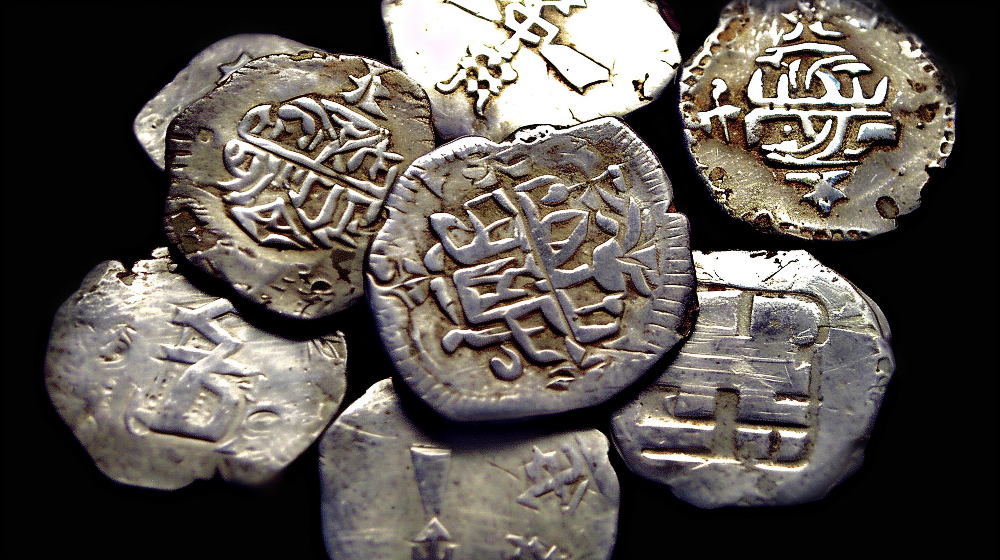
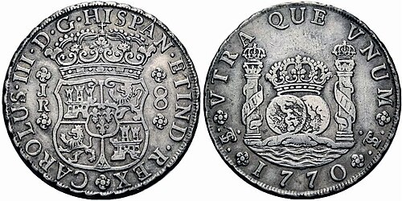
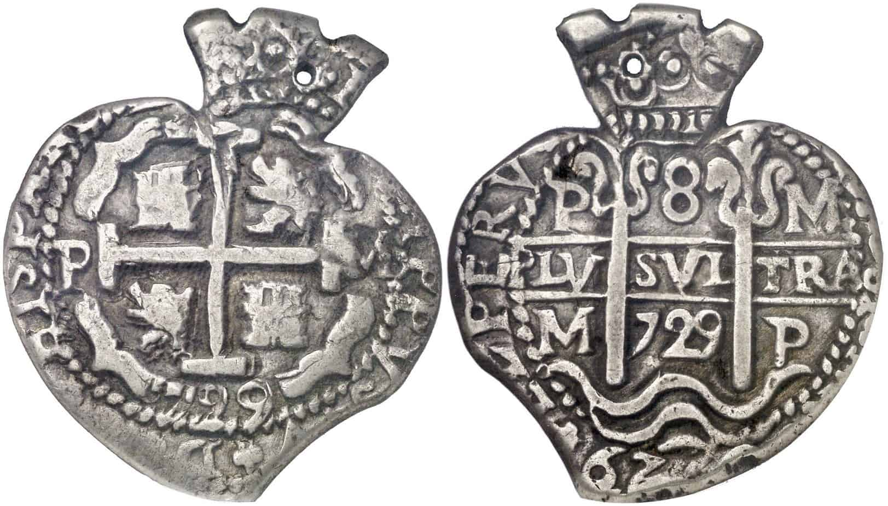
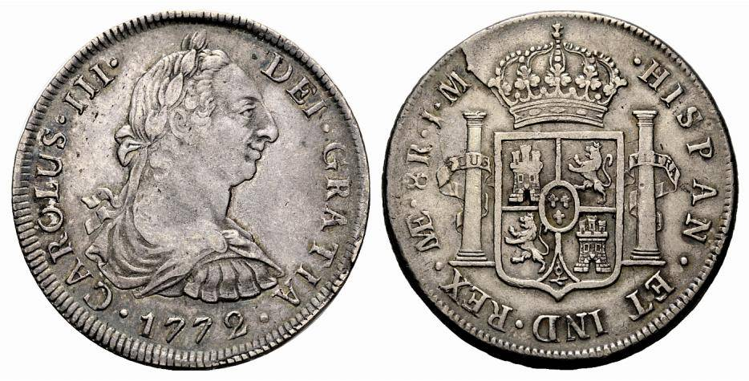
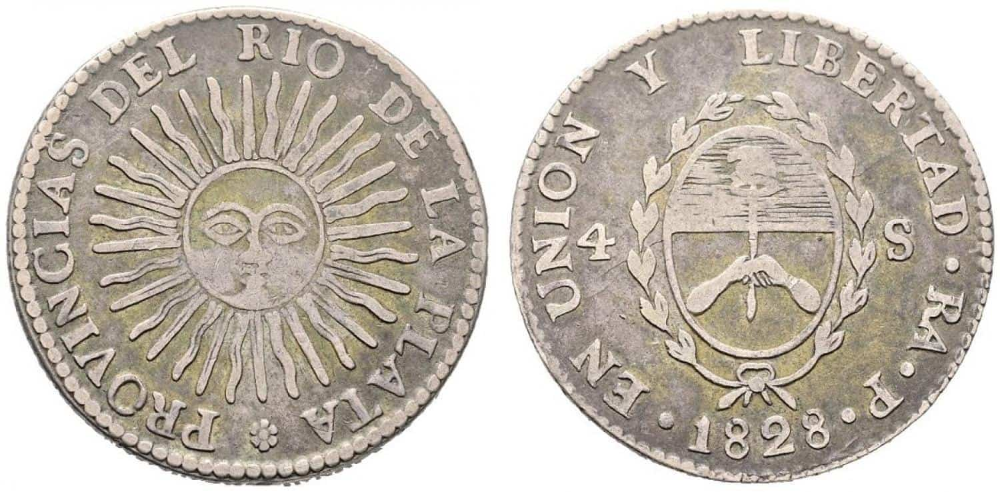
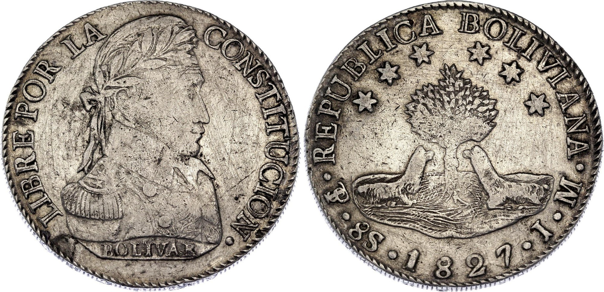

×

El legado de plata que cambió el mundo
Modelo 3D interactivo: Arrastra para rotar • Scroll para zoom • Clic derecho para mover
En los inicios de la acuñación en América y el mundo, el proceso era completamente artesanal y dependía de la fuerza humana. En la Villa Imperial de Potosí, el trabajo era realizado por indígenas bajo el sistema colonial de la mita.
Este método se conoció como acuñación a martillo:
Debido a la prisa, el desgaste y lo rudimentario del golpe manual, las monedas resultaban tosca, con bordes totalmente irregulares y formas únicas. A este tipo de monedas artesanales hechas a golpe de mano se les llamó macuquina.

Monedas iniciales fabricadas a golpe de martillo. Siglos XVI-XVIII.
Siglo XVI-XVIII
El origen del signo del dólar. Primera divisa global.
Siglo XVI-XVII
Plata cortada en forma de corazón perfecto. 1727.
1727
Monedas con perfil de los reyes españoles. 1772-1825.
1772-1825
Primeras monedas argentinas acuñadas en Potosí. 1813-1815.
1813-1815
Primera moneda con rostro de Simón Bolívar.
1827La frase "No vale un centavo" viene de estas monedas. El "centavo" era la moneda más pequeña y menos valiosa. Si algo "no valía un centavo", era porque ni siquiera valía la moneda más chica de Potosí.